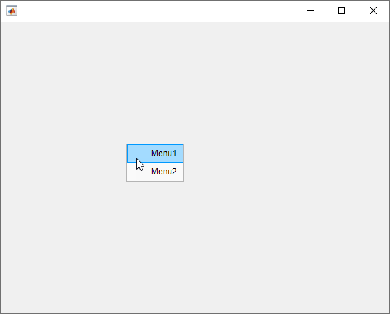
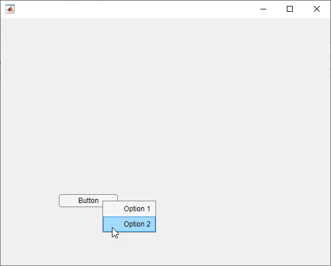
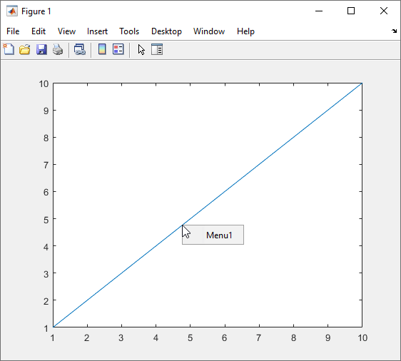
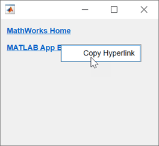
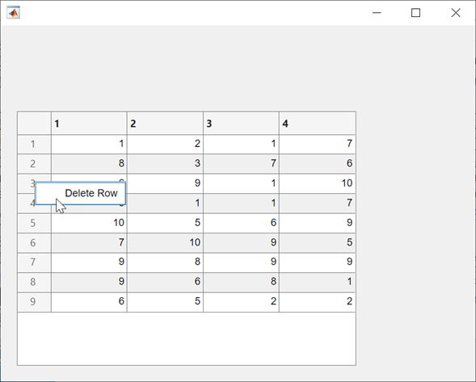
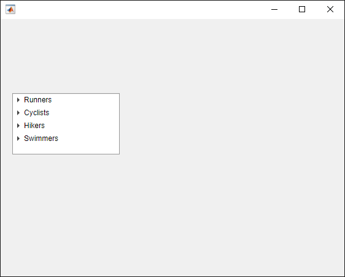
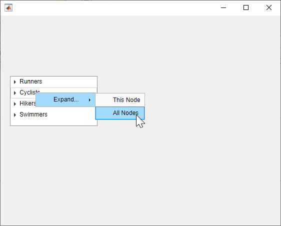

uicontextmenu
Create context menu component
Description
cm = uicontextmenuContextMenu object. If
a figure does not exist, then MATLAB® calls the figure function to create one.
To enable the context menu to open in the figure, you must also take these steps:
Assign the context menu to a UI component or graphics object in the same figure.
Create at least one child
Menuobject within the context menu.
cm = uicontextmenu(___,Name,Value)ContextMenu properties using one or more name-value
arguments. For example,
uicontextmenu("ContextMenuOpeningFcn",@myfunction) creates a
context menu that executes myfunction when a user opens the
context menu. Use this option with any of the input argument combinations in the
previous syntaxes.
Examples
Create a context menu with two menu items in a UI figure.
Assign the context menu to the figure itself by setting the
ContextMenu property of the figure to the
ContextMenu object. To view the context menu, right-click
anywhere in the figure window.
fig = uifigure; cm = uicontextmenu(fig); m1 = uimenu(cm,"Text","Menu1"); m2 = uimenu(cm,"Text","Menu2"); fig.ContextMenu = cm;

Create a UI figure with a button. Then, create a context menu with two menu items in the figure and assign the context menu to the button. To view the context menu, right-click on the button.
fig = uifigure; btn = uibutton(fig); cm = uicontextmenu(fig); m1 = uimenu(cm,"Text","Option 1"); m2 = uimenu(cm,"Text","Option 2"); btn.ContextMenu = cm;

Create a context menu that prints a message in the Command Window each time you open it.
Create a line plot in a figure. Then, create a context menu with one menu
item and assign it to the line plot. Create a
ContextMenuOpeningFcn callback function that displays
output in the Command Window each time the context menu opens.
f = figure; cm = uicontextmenu(f); m = uimenu(cm,"Text","Menu1"); cm.ContextMenuOpeningFcn = @(src,event)disp("Context menu opened"); p = plot(1:10,"ContextMenu",cm);
To view the context menu, right-click the plot line. When the context menu
opens, the Command Window displays Context menu
opened.

Since R2023b
Create an app that displays hyperlinks and allows users to copy the link URLs to the clipboard using a context menu.
In a file named hyperlinkApp.m, write a function that
implements the app:
Create a UI figure and a grid layout manager to lay out the app.
Create two hyperlinks in the grid layout manager.
Create a context menu with a
Copy Hyperlinkmenu item, and assign the context menu to both of the hyperlinks.Write a callback function named
copyHyperlink. In the callback function, access the right-clickedHyperlinkobject by using theevent.ContextObjectevent data, and then copy the URL to the clipboard. Assign the function to theMenuSelectedFcncallback property of the menu item. For more information about callbacks, see Create Callbacks for Apps Created Programmatically.
function hyperlinkApp fig = uifigure; g = uigridlayout(fig,[2, 1]); g.RowHeight = {'fit','fit'}; hlink1 = uihyperlink(g); hlink1.Text = "MathWorks Home"; hlink1.URL = "https://www.mathworks.com/"; hlink2 = uihyperlink(g); hlink2.Text = "MATLAB App Building"; hlink2.URL = "https://www.mathworks.com/products/matlab/app-designer.html"; cm = uicontextmenu(fig); m = uimenu(cm); m.Text = "Copy Hyperlink"; hlink1.ContextMenu = cm; hlink2.ContextMenu = cm; m.MenuSelectedFcn = @copyHyperlink; end function copyHyperlink(src,event) url = event.ContextObject.URL; clipboard("copy",url) end
Before R2023b: Write the callback function to
access the right-clicked Hyperlink object by querying the
CurrentObject property of the figure instead of by
using the event.ContextObject event data.
Run the hyperlinkApp function. Right-click one of the
hyperlinks, and then select Copy Hyperlink to
copy the link URL.

Since R2023b
Create an app that displays a table and allows users to delete rows by using a context menu item. Program the context menu item to appear only when a user right-clicks a row of table data.
In a file named tableApp.m, write a function that
implements the app:
Create a UI figure and a table UI component with some random data.
Create a context menu with a
Delete Rowmenu item, and assign the context menu to the table.Write two callback functions to respond to context menu actions:
deleteRow— Query the row of the table that was right-clicked, and then delete that row.toggleVisibility— Show theDelete Rowmenu item when the user right-clicks a row of table data, and hide the item otherwise.
In each callback, use the
event.InteractionInformationcallback event data to access information about where in the table the user right-clicked to open the context menu.Assign the
deleteRowfunction to theMenuSelectedFcncallback property of the menu item, and assign thetoggleVisibilityfunction to theContextMenuOpeningFcncallback property of the context menu. For more information about callbacks, see Create Callbacks for Apps Created Programmatically.
function tableApp fig = uifigure; tbl = uitable(fig); tbl.Position = [20 20 400 300]; tbl.Data = randi(10,[10 4]); cm = uicontextmenu(fig); m = uimenu(cm); m.Text = "Delete Row"; tbl.ContextMenu = cm; m.MenuSelectedFcn = @deleteRow; cm.ContextMenuOpeningFcn = @(src,event)toggleVisibility(src,event,m); end function deleteRow(src,event) tbl = event.ContextObject; row = event.InteractionInformation.Row; tbl.Data(row,:) = []; end function toggleVisibility(src,event,m) row = event.InteractionInformation.Row; rowClicked = ~isempty(row); m.Visible = rowClicked; end
Run the tableApp function and right-click the table.
The context menu appears only when you right-click a table row. Select the
Delete Row item to delete the right-clicked
row.

The specific callback event data stored in the
event.InteractionInformation property depends on the
UI component that the user right-clicked to open the context menu. For more
information, see the callback property descriptions on Menu and ContextMenu.
Since R2023b
Create a context menu for a tree component. Customize the context menu action based on the level of the tree node that the user right-clicks.
In a new script in your current folder, create a UI figure. Then, create a tree with four top-level nodes and a set of nested nodes.
fig = uifigure; t = uitree(fig,"Position",[20 200 175 100]); category1 = uitreenode(t,"Text","Runners"); r1 = uitreenode(category1,"Text","Joe"); r2 = uitreenode(category1,"Text","Linda"); category2 = uitreenode(t,"Text","Cyclists"); c1 = uitreenode(category2,"Text","Rajeev"); category3 = uitreenode(t,"Text","Hikers"); h1 = uitreenode(category3,"Text","Jack"); category4 = uitreenode(t,"Text","Swimmers"); s1 = uitreenode(category4,"Text","Logan");

Create a context menu with one menu item and two submenus that users can
click to expand a single tree node or all of the tree nodes. For each
submenu, specify a MenuSelectedFcn callback function to
execute when a user selects the menu option.
cm = uicontextmenu(fig); m1 = uimenu(cm,"Text","Expand..."); sbm1 = uimenu(m1,"Text","This Node", ... "MenuSelectedFcn",@expandSingle); sbm2 = uimenu(m1,"Text","All Nodes", ... "MenuSelectedFcn",@expandAll);
Assign the context menu to the top-level tree nodes by setting the
ContextMenu property of each node to the
ContextMenu object.
category1.ContextMenu = cm; category2.ContextMenu = cm; category3.ContextMenu = cm; category4.ContextMenu = cm;
At the bottom of the file, define the expandSingle and
expandAll callback functions. Define the functions to
accept the source and event data that MATLAB passes to all callback functions. Use the
event.InteractionInformation and
event.ContextObject properties to access information
about where the user right-clicked to open the context menu.
function expandSingle(src,event) node = event.InteractionInformation.Node; expand(node) end function expandAll(src,event,t) n = event.ContextObject; t = ancestor(n,"uitree"); expand(t) end
Save and run the script. Right-click any of the top-level tree nodes to view the context menu.

Input Arguments
Name-Value Arguments
Specify optional pairs of arguments as
Name1=Value1,...,NameN=ValueN, where Name is
the argument name and Value is the corresponding value.
Name-value arguments must appear after other arguments, but the order of the
pairs does not matter.
Example: uicontextmenu(ContextMenuOpeningFcn=@myfunction)
creates a context menu that executes myfunction when a user opens
the context menu.
Before R2021a, use commas to separate each name and value, and enclose
Name in quotes.
Example: uicontextmenu("ContextMenuOpeningFcn",@myfunction)
creates a context menu that executes myfunction when a user opens
the context menu.
Note
The properties listed here are only a subset. For a complete list, see
ContextMenu.
Context menu opening callback function, specified as one of these values:
A function handle.
A cell array in which the first element is a function handle. Subsequent elements in the cell array are the arguments to pass to the callback function.
A character vector containing a valid MATLAB expression (not recommended). MATLAB evaluates this expression in the base workspace.
For more information about specifying a callback property value as a function handle, cell array, or character vector, see Specify a Callback Function.
This callback function executes when the context menu opens in response to user interaction. You can use this callback function to customize the context menu appearance based on what the user right-clicked.
This callback function can access specific information about the user's interaction
with the app. MATLAB passes this information in a ContextMenuOpeningData
object as the second argument to your callback function. In App Designer, the argument
is named event. You can query the object properties using dot
notation. For example, event.ContextObject returns information about
which component the user right-clicked to open the context menu.
Note
While you can specify a ContextMenuOpeningFcn callback for any
context menu, the ContextMenuOpeningData object in the callback
event data is available only when the context menu satisfies both of these conditions:
The context menu is associated with a
uifigure-based app (such as an app created in App Designer).The context menu is associated with a UI component (as opposed to a graphics object, such as an
AxesorLineobject), or is associated with a container that contains only UI components.
This table lists the properties of the ContextMenuOpeningData
object.
| Property | Value |
|---|---|
ContextObject | Object that the app user right-clicked to open the context menu |
InteractionInformation | Information about where in the component the app user
right-clicked to open the context menu. This information is stored
as an object with different properties depending on the value of
For example, if
|
Source | Context menu object that executes the callback |
EventName | 'ContextMenuOpening' |
This table lists the properties of the InteractionInformation
object. The properties depend on which object the app user right-clicked to open the
context menu.
ContextObject | InteractionInformation Property | Value |
|---|---|---|
| Any | Location | Location where the user right-clicked relative to the
bottom-left corner of the parent container of the
The value
of |
ScreenLocation | Location where the user right-clicked relative to the
bottom-left corner of their primary display, returned as a
two-element vector of the form The value of | |
Table | DisplayRow | Row that the user right-clicked as it appears visually in the table, returned as a numeric scalar. If the user has not
sorted the table, then |
DisplayColumn | Column that the user right-clicked as it appears visually in the table, returned as a numeric scalar. If the user has
not rearranged the table, then | |
Row | Row that the user right-clicked as it corresponds to the original table data, returned as a numeric scalar. If
the user has not sorted the table, then | |
Column | Column that the user right-clicked as it corresponds to the original table data, returned as a numeric scalar. If
the user has not rearranged the table, then
| |
RowHeader | Whether the user right-clicked the table row header, returned as a
logical 0 (false) or
1 (true). | |
ColumnHeader | Whether the user right-clicked the table column header, returned as a
logical 0 (false) or
1 (true). | |
Tree | Node | Right-clicked node, returned as a If the user right-clicked an area of the tree
that is not associated with a node, then |
Level | Level of the right-clicked node, returned as a numeric scalar.
Nodes parented directly to the If the user right-clicked an area of the tree that
is not associated with a node, then | |
ListBox | Item | Index of the right-clicked list box item, returned as a numeric scalar. If the user right-clicked an area of the list
box that is not associated with an item, then
|
Context menu children, returned as an empty GraphicsPlaceholder or a vector
of Menu objects.
You cannot add or remove children using the Children property. Use this
property to view the list of children or to reorder the child menu items.
The order of the children in this array reflects the reverse-order of how
the menu items appear in an opened context menu.
For example, this code creates three context menus. When you open the context
menu in the running app, Menu1 appears as the first menu option.
fig = uifigure; cm = uicontextmenu(fig); m1 = uimenu(cm,'Text','Menu1'); m2 = uimenu(cm,'Text','Menu2'); m3 = uimenu(cm,'Text','Menu3'); fig.ContextMenu = cm;
cm.Children returns a list of the menu items in the reverse
order.
cm.Children
ans = 3×1 Menu array: Menu (Menu3) Menu (Menu2) Menu (Menu1)
Objects with the HandleVisibility property set to 'off' are not listed in the Children property.
To add a child to this list, set the
Parent property of another
Menu object to this
ContextMenu object.
Tips
For a context menu to display in a running app, the context menu must:
Have at least one menu item.
Be assigned to a UI component or graphics object in the same figure.
To open a context menu programmatically, use the
openfunction. The context menu must be the child of a figure created with theuifigurefunction. To display the context menu, it must have at least one menu item created with theuimenufunction.To open a context menu interactively, you can use the keyboard shortcut Shift+F10 when the component associated with the context menu is in focus.
Version History
Introduced before R2006aThe ContextMenuOpeningFcn callback has additional event data
when the callback is associated with a context menu on a UI component. Use this data
to customize and share context menus in an app.
| Event Data Property | Description |
|---|---|
ContextObject | Object that the app user right-clicked to open the context menu |
InteractionInformation | Information about where in the component the app user right-clicked to open the context menu, such as the cell of a table |
When you create a context menu and assign it to a Tree object,
the context menu appears when you right-click anywhere in the tree, including the
area with tree nodes. You can share a single context menu across all nodes in a tree
by setting the context menu on the tree instead of each individual tree node.
If you set a context menu on an individual TreeNode object, the
tree node context menu still appears when you right-click the node, even if the
Tree object has an assigned context menu.
Previously, context menus on trees appeared only when you right-clicked on the
portion of the tree below the tree nodes. To retain this behavior, create a
ContextMenuOpeningFcn callback that shows the context menu
only when the right-click occurs on a region without a tree node.
fig = uifigure; cm = uicontextmenu(fig,ContextMenuOpeningFcn=@hideMenu); m1 = uimenu(cm,Text="Menu Item"); t = uitree(fig,ContextMenu=cm); n1 = uitreenode(t); function hideMenu(src,event) if isprop(event.InteractionInformation,"Node") src.Visible = "off"; end end